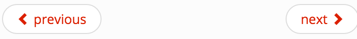
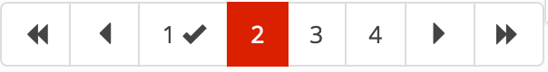
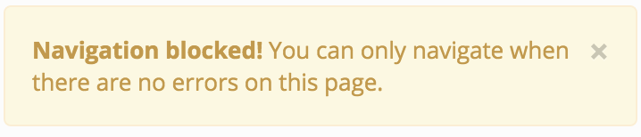
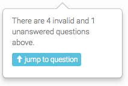

Composing the questionnaire view
Basics
Although the questionnaire has a mandatory route, there is no corresponding view provided. The file has to be created by the integrator and should be called assessment.html. The path of this file, relative to the root directory must be registered file as the configuration attribute assessmentViewPath. In this view the questionnaire directives can be composed freely.
Since release 3.1.0 the questionnaire comes with no <form>-tag in order to be compatible with web application frameworks already providing a <form>-tag (e.g. ASP.NET webforms). Nevertheless, the questionnaire directive should be embedded into a form.
A minimal assessment view without a submit button, no pagination and no multi-language support looks like this:
//assessment.html
<form>
<cep-questionnaire assessment-id="assessmentId" assessment-role="Applicant"></cep-questionnaire>
<form>
Questionnaire parameters
The questionnaire directive takes the following parameters:
| Key | Required | Observed | Two-Way-Binding | Explanation |
|---|---|---|---|---|
application |
✗ | ✓ | ✓ | (JSON) The application form that the questionnaire should render. If undefined, the assessmentId will be used to get an application form from the Assessment Endpoint. |
assessmentId |
✓ | ✓ | ✗ | (String) ID of the assessment that is currently displayed and assessed. |
language |
✗ | ✓ | ✗ | (String) The language to display the application form in the questionnaire. |
readonly |
✗ | ✓ | ✗ | (boolean) If set to true, input fields are greyed out and no input is possible. This is just a usability feature. A hacker can still edit the inputs. |
pagination-mode |
for pagination | ✓ | ✓ | (String or String variable) Takes 'Questionnaire' (default, fallback) or 'QuestionGroup' (both with quotation marks). Can be a variable that changes during runtime. If set to 'QuestionGroup', top level question groups from the knowledge base will be displayed as pages. See below for more information about pagination. |
current-page-id |
for pagination | ✓ | ✓ | (String variable) The ID of the current top level question group when pagination-mode is set to 'QuestionGroup'. It must not be a static string (="'someId'") since it is two-way-bound to the current state of the pagination. |
assessment-role |
✓ | ✓ | ✗ | (String) The role that should be used to decide if the current user has write access to an assessment. For common integration scenarios this value should be the same value as the cep-core/config.properties com.hannoverre.reflex.cep.service.integration.initialize.activeRole property. |
“Observed” means, that the questionnaire watches the variable and adapts accordingly when changed. “Two-Way-Binding” means, that this variable may be changed by the questionnaire. You can observe this variable from inside your portal app.
For standard one-page-applications (no pagination) use cases, take the following snippet (no additional javascript code required):
<cep-questionnaire assessment-id="assessmentId" assessment-role="applicant"> </cep-questionnaire>
For standard pagination-enabled use cases, copy the following snippet (no additional javascript code required):
<cep-questionnaire assessment-id="assessmentId" assessment-role="applicant" pagination-mode="'QuestionGroup'" current-page-id="currentPageId"> </cep-questionnaire>
Assembly (transclusion) of directives inside the questionnaire
Since release 3.2 (Grim Goby) the main questionnaire has transclusion activated. That means, that it takes HTML inside the <cep-questionnare>...</cep-questionnaire>-tag.
There are two areas where content can be added: above the questions and below. To add content use the following transclusion blocks:
<cep-questionnaire ...>
<before>
<!-- content above the questions -->
</before>
<after>
<!-- content below the questions -->
</after>
</cep-questionnaire>
Submit button
Although it might be surprising that the questionnaire comes without a submit button by default, there are cases where the application form should only be displayed and not submitted at all.
To add a submit button, it has to be transcluded to one of the transclusion areas (see section above). Keep in mind that the submit-function parameter is mandatory. The $parent prefix is necessary, because transclusion creates a child scope in AngularJS. The minimal submit button below the questionnaire has the following code:
<cep-questionnaire ...>
<after>
<cep-submit-button submit-function="$parent.submitIfValid"></cep-submit-button>
</after>
</cep-questionnaire>
Possible parameters are:
| Key | Required | Live changeable | Explanation |
|---|---|---|---|
submit-function |
✓ | ✓ | (Function) The function that is called when the button is pressed. Should be the submitIfValid function from the questionnaire-directive. |
should-be-disabled |
✗ | ✓ | (boolean) If set to true, the button is greyed out and not clickable. |
should-be-hidden |
✗ | ✓ | (boolean) If set to true, the button is hidden. |
The submit button works well in combination with pagination. It can be hidden and disabled interactively. When using pagination, the disabled and hidden states can be derived from the pagination state. The following code needs the <cep-pagination>-directive in place. It hides and disables the button as long as the user has not seen every page of the questionnaire and the questionnaire is invalid.
<cep-questionnaire ... pagination-mode="'QuestionGroup'">
<after>
<cep-pagination></cep-pagination>
<cep-submit-button
submit-function="$parent.submitIfValid"
should-be-disabled="$parent.questionForm.$invalid"
should-be-hidden="userHasNotSeenAllPages">
</cep-submit-button>
</after>
</cep-questionnaire>
Pagination
Since release 3.2 (Grim Goby) the main questionnaire has a set of pagination directives that can be composed by the integrator. Please keep in mind, that pagination has special requirements to the knowledge base. Every top level question group is interpreted as a page. Please refer to section Questionnaire Pagination of the ReFlex RKE Handbook for details on how to prepare the knowledge base for pagination.
To activate group pagination, set the pagination-mode parameter to 'QuestionGroup'. Don’t forget the quotation marks since the value is parsed again in the questionnaire. If it has to be changeable during runtime, pass a variable like: pagination-mode="paginationMode". To keep the state when refreshing, the current-page-id parameter has to be set as shown in the example below, too.
<cep-questionnaire ... pagination-mode="'QuestionGroup'" current-page-id="currentPageId">
...
</cep-questionnaire>
Now, there are some example directives that use the API of the cep-pagination directive. Therefore they have to be nested like this:
<cep-questionnaire ... pagination-mode="'QuestionGroup'" current-page-id="currentPageId">
<after>
<cep-pagination>
<!-- place pagination directives always inside the cep-pagination directive -->
</cep-pagination>
</after>
</cep-questionnaire>
There are four different directives that can be used:
| Directive | Description |
|---|---|
<cep-prev-next-pagination> |
 A simple pager with ‘previous’ and ‘next’ button. |
<cep-full-pagination> |
 A complete pagination with ‘first’, ‘previous’, ‘next’, ‘last’ and page number buttons. Each visited page shows a status icon that indicates errors, warnings or validity. |
<cep-breadcrumb-pagination> |
A clickable list of page titles in ‘breadcrumb’-style. Each visited page shows a status icon that indicates errors, warnings or validity. By default, it shows the label of the top level question group. But only if there is no front end translation present. The translation key is components.pagination.pageTitle.[question-group-id]. (If your group ID contains dots (.), you have to replace them in the translation by underscore (_) due to technical reasons, e.g. “group.id” => “group_id”). |
<cep-blocked-pagination-alert> |
 In some cases changing the page might not be allowed. This directive shows a dismissible alert that informs the user when a pagination request was blocked and why. This directive is hidden by default. |
It is possible to create a custom pagination. The HTML has to be placed inside the <cep-pagination>-directive. On this directives scope there are pagination functions defined: goForward(), goBackwards(), goToPage(pageObject) and isNavigationToAllowed(pageObject). It also defines variables: pages (an array of page objects), a boolean named questionnaireIsInvalid, a boolean named userHasNotSeenAllPages and currentPage the page object representing the current page. A page object contains the following:
{
index: 0, //zero-based page number
id: 'question-group-id-from-kb', //this part is the url path
caption: 'caption from the KB',
alreadySeenByUser: true, //whether this page has already been shown to the user
questionObject: {...} //the question group object from the application
}
Question reminder
 To enable the question reminder, use the following code:
<cep-questionnaire [...]> <before> <cep-question-reminder></cep-question-reminder> </before> </cep-questionnaire>
If you have a fixed header bar, you should give this directive an optional offset in pixels which is for the “out-of-viewport” calculation:
<cep-question-reminder offset="50"></cep-question-reminder>
Other public directives, public services and public events
The API of the cep-questionnaire is split between public directives, public services, and public events:
Public directives
| Directive | Description |
|---|---|
<cep-questionnaire-legend /> |
Display a legend for required and optional questions. The texts for the legend can be configured in the translations, see “questionAnnotation” in Translations. |
<cep-pdf-link /> |
A button that connects to the CEP Document Service to create a downloadable PDF from the assessment result. The CEP Document Service uses the ReFlex DCS internally. For generating documents in the back-office, this directive should not be used. Rather, the back-office system should connect to the ReFlex DCS’ REST API directly. |
<cep-auto-submit-button /> |
A button that triggers an assessment with the current data. Must be placed on the assessment.html page. |
Only the directive <cep-pdf-link /> has additional attributes:
| Directive | Attribute | Description | Required |
|---|---|---|---|
| cep-pdf-link | doctype | The type/name of the document template as configured in the ReFlex DCS. | Mandatory |
| assessment-id | The id of the assessment for which to create the PDF document. | Mandatory | |
| filename | The Filename Template for the downloaded pdf. e.g.: 'filename-yyyy-MM-dd' (date format will be replaced with current date) | Optional |
Public services
| Service | Methods | Description |
|---|---|---|
LanguageSelectionService |
changeLanguage(languageKey) |
Changes the language of the questionnaire to the language defined by languageKey |
Public events
| Event | Description |
|---|---|
questionnaire:notification |
Notification event that is triggered on info, warnings and errors |
questionnaire:sync |
Triggers the synchronization of the frontend application with the backend |
Spinner overlay
To block further user input while a server round-trip happens, the cep-questionnaire provides a spinner overlay that can be integrated as follows (inside the ng-app viewport container):
<div ng-controller=“SpinnerController” ng-show=“showSpinner” class=“loader with-backdrop”> <span class=“spinner”></span> </div>